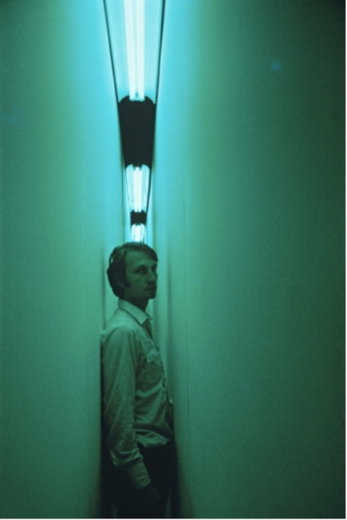

Extended through April 14th
Guest Curator: Ted Mann
Coinciding with the opening of Bruce Nauman’s (MFA ’66, UC
Davis) retrospective at The Museum of Modern Art, New York,
this exhibition features the first realization of a
participatory environment Nauman conceived in 1970. The work
is a narrow passageway that wraps around an existing room,
combining colored fluorescent light and closed-circuit video
to manipulate the viewer’s perceptual experience. An adjacent
gallery includes artworks that situate the corridor within the
artist’s career.
Read more->

Few living artists have done as much to expand the boundaries
of art since 1960 as Bruce Nauman. During the mid-late 1960s -
beginning with his time as a graduate student in the UC Davis
studio art program, where he received his MA in 1966 - Nauman
was at the forefront of a generation of artists that placed
process and activity over static, predetermined forms, and
that took up language and the body as materials. Unbound by
traditional divisions of medium, Nauman has moved freely
between sculpture, performance, film, video, photography,
drawing, printmaking, and large-scale installation.
This exhibition coincides with a major Nauman retrospective,
co-organized by The Museum of Modern Art (MoMA) and the
Schaulager Basel, the artist's first in over twenty
years. While the retrospective provides an opportunity to
survey the full breadth of Nauman's work, the present
exhibition at the Manetti Shrem Museum focuses on a single,
exceptional artwork: a large-scale participatory environment
from 1970-71. Between 1969 and 1976, Nauman designed some
forty corridors, rooms, and other architectural installations.
The majority of these installations have been built for
exhibition on at least one occasion, but Blue and Yellow
Corridor is one of a handful that have remained on paper, in
the form of drawings by the artist. Although Nauman originally
developed the concept for this particular work in three
drawings of 1970-1971, this exhibition represents the first
time that the installation has actually been realized.
Read Less ->